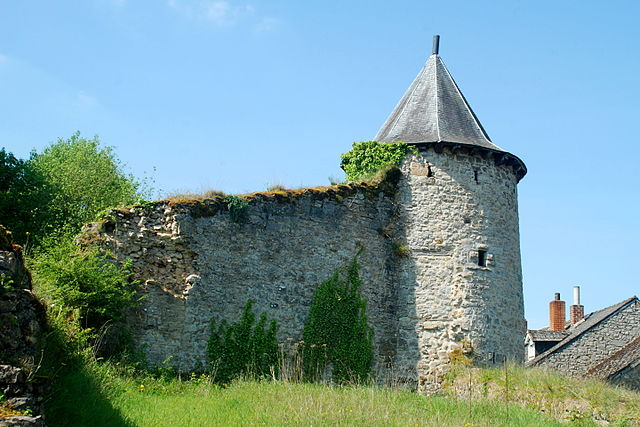

Autour du centre de l’Europe des 15


Les Châteaux et Fortifications de la Région
Château Licot
L’actuelle maison communale était à l’origine la résidence de la famille des maîtres de forges Licot.
En 1745, Michel Licot, fils du maître de forges de Vireux épousa la fille du maître de forges de Nismes. Grâce à leur fortune ils ont pu acquérir les terrains de l’actuelle scierie du fourneau ,le parc et la place de l'actuel château.
Leur arrière-petit-fils, Auguste, a fermé les installations de Nismes et a déplacé ses activités à Charleroi, au moment où il agrandissait et embellissait le château de Nismes comme résidence pour la famille.
La 1ère Guerre mondiale a ruiné la famille et entre les deux guerres, le parc et le château ont été achetés par la commune. Le château est devenu la Maison Communale en 1963.

Château des Comtes de Hamal
à Vierves-sur-Viroin
Maîtres des lieux entre 1567 et 1852, les Comtes de Hamal restructurent profondément l’ancienne forteresse et ferme d’origine médiévale et réduisent les fonctions défensives de l’édifice à un socle.
La façade du logis, de style classique, est percée de larges baies. Ce logis « moderne » est flanqué de la tour dite d’Attila, dont la toiture à bulbes impose le château dans le paysage tandis que ses larges fenêtres offrent de nouveaux postes d’observation.
Les travaux liés à la plaisance se poursuivent dans la seconde moitié du 19ème siècle : les deux cours sont rassemblées en une vaste terrasse ouverte sur la vallée.
Le jardin en contrebas, la couronne arborée dédoublant les remparts et l’important verger en fond de vallée prolongent l’agrément au-delà de l’enceinte.
Le château n’est pas ouvert au public, mais vous pourrez le découvrir sous tous ses angles en parcourant le village et les différents points de vue situés de part et d’autre du Viroin.
Château du Pont d'Avignon

Le château du Pont d'Avignon (ou château du Mousty) est un château en ruines classé situé à Nismes, village de la commune belge de Viroinval situé dans la région de la Calestienne au sud de l'Entre-Sambre-et-Meuse, en province de Namur.
Le site du château et de sa chapelle castrale a ensuite été occupé par l'ancienne église fortifiée Saint-Lambert et son cimetière.
Les ruines du château se dressent au centre du village de Nismes entre la rue d'Avignon, la rue Vieille Église et la rue Saint-Antoine, sur une butte dominant le village appelée le « Mousty » ou le « Pont d'Avignon », près de la résurgence de l'Eau Noire
Le nom du château est dû à un des baillis représentant le prince-évêque de Liège à Nismes, Jean d'Avignon, qui donna son nom au quartier, à la rue et au château.
Le château-fort
Le site des ruines de l'ancien château-fort, de l'ancienne église paroissiale Saint-Lambert et de l'ancien cimetière fortifié prend plus ou moins la forme d'un quadrilatère orienté du nord-est au sud-ouest et bordé par la rue Saint-Antoine au nord, la rue Vieille Église à l'est et la rue d'Avignon au sud.
Il ne reste de l'ancien château-fort qu'une tour située à l'angle nord-ouest de ce quadrilatère ainsi qu'une portion de muraille ancrée sur le rocher le long de la rue Saint-Antoine, au nord du quadrilatère et une autre au sud de la tour.
La tour est une tour circulaire de trois niveaux édifiée en moellons et couverte d'une toiture octogonale en ardoises à coyau portée par des corbeaux de bois.
Elle est percée, au nord, d'une porte orientée vers la rue Saint-Antoine, à l'est, d'une meurtrière et d'une petite baie à bossages et, au sud-est, une porte murée à linteau de bois qui donnait jadis accès à la courtine.
L'église fortifiée
La partie occidentale du quadrilatère fortifié est occupé par les ruines de l'ancienne église paroissiale Saint-Lambert, orientée elle aussi du nord-est au sud-ouest.
À l'est, le chevet est divisé en deux par un puissant contrefort qui cache la jonction des deux parties de l'église. À gauche de ce contrefort, le chevet est percé d'une porte en anse de panier, surmontée d'un cordon de pierre et de deux canonnières, refaites au début du xviie siècle au moment de l'agrandissement de l'église.
Le cimetière fortifié
Les ruines de l'ancienne église sont entourées, au nord et à l'est, de celle de l'ancien cimetière.
Celui-ci est jonché de pierres éparses dont certaines sont ornées de motifs floraux ou végétaux.